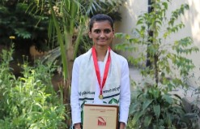
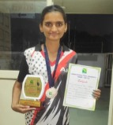
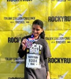
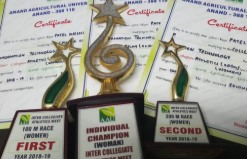

Medals & Milestones
Just like in design, sports have taught me the importance of perseverance, teamwork, and focus. Outside of my design work, I’ve competed and earned recognition for my dedication and performance. Whether it's achieving a goal on the field or crafting an exceptional user experience, I put the same commitment and effort into everything I do.



